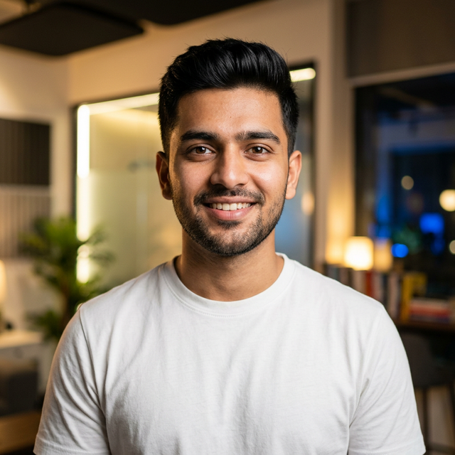

Current Focus
AI Automation & Civic-Tech
SCERT Kerala
Computer Science
3+ Years
Design Exp.
Designer, Developer, Builder
Madhav Manu.
AI-First Design.
I am a Kerala-based designer and developer working at the intersection of **technical reasoning** and **aesthetic purpose**. I build intelligent systems and modern web experiences that turn friction into flow.
Visual Storytelling
3+ years as a freelance editor. A deep understanding of how motion, design, and technology command attention.
Intelligent Systems
Building AI-powered automation that simplifies complex services and business workflows.
Venture_Founder
Founder of Frameverse.
Beyond Southernside, I lead Frameverse Studio—a creative production house dedicated to high-impact motion design and visual storytelling. We bridge the gap between complex brand narratives and cinematic execution.
Role
Creative Director
Status
Scaling v2.0
"Innovation with Civic Purpose."
What sets my work apart is a focus on **real-world impact**. I am particularly interested in civic-tech—building products that improve accessibility for everyday users.
Initiatives like Sahayi AI reflect this direction: human-centred, language-friendly, and practical by design. I approach every project with the balance of design sensitivity and scalable technical logic.